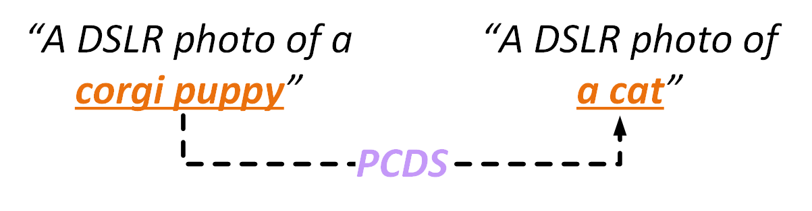
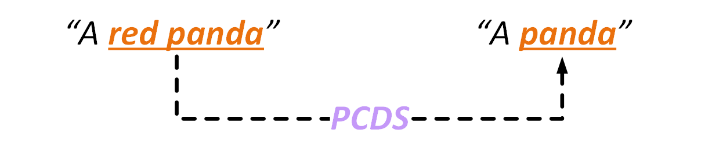

Examples of text-to-3D asset creations with our framework (a). In this paper, we present VividDreamer, an efficient text-to-3D generation framework that can distill semantically-consistent textures and high-fidelity structures from pretrained 2D diffusion models using a novel Pose-dependent Consistency Distillation Sampling objective in a coarse-to-fine optimization manner, allowing to yield high-fidelity 3D objects (rows 1 and 2) and 3D avatars (row 3) based on the given text prompts. Specifically, VividDreamer achieves high training efficiency, which can create ready-to-use 3D assets within 10 minutes, while producing photorealistic 3D objects within 30 minutes (b).
Text-to-3D generation aims to create 3D assets from text-to-image diffusion models. However, existing methods face an inherent bottleneck in generation quality because the widely-used objectives such as Score Distillation Sampling (SDS) inappropriately omit U-Net jacobians for swift generation, leading to significant bias compared to the ''true'' gradient obtained by full denoising sampling. This bias brings inconsistent updating direction, resulting in implausible 3D generation (e.g., color deviation, Janus problem, and semantically inconsistent details). In this work, we propose Pose-dependent Consistency Distillation Sampling (PCDS), a novel yet efficient objective for diffusion-based 3D generation tasks. Specifically, PCDS builds the pose-dependent consistency function within diffusion trajectories, allowing to approximate true gradients through minimal sampling steps (1~3). Compared to SDS, PCDS can acquire a more accurate updating direction with the same sampling time (1 sampling step), while enabling few-step (2~3) sampling to trade compute for higher generation quality. For efficient generation, we propose a coarse-to-fine optimization strategy, which first utilizes 1-step PCDS to create the basic structure of 3D objects, and then gradually increases PCDS steps to generate fine-grained details. Extensive experiments demonstrate that our approach outperforms the state-of-the-art in generation quality and training efficiency, conspicuously alleviating the implausible 3D generation issues caused by the deviated updating direction. Moreover, it can be simply applied to many 3D generative applications to yield impressive 3D assets.
Examples of different objectives. Visually, the acquisition of ''true'' gradient (a) is a time-consuming work, requiring the full denoising sampling in each iteration. To skip such a lengthy process, Score Distillation Sampling (SDS) (b) directly maps the noise to data (i.e., pseudoGTs) using 1-step DDPM sampling, but SDS struggles to acquire accurate gradients due to the intrinsic randomness brought by DDPM. On the contrary, our PCDS builds the pose-dependent consistency function $f_\phi$ from any timestep $t$ to the origin 0 within diffusion trajectories, allowing to generate accurate pseudoGTs and acquire precise gradients via minimal sampling steps (1~3).
|
DreamFusion (SDS) (~1h) |
DreamGaussian (SDS) (~3mins) |
GaussianDreamer (SDS) (~9mins) |
LucidDreamer (ISM) (~45mins) |
VividDreamer (Ours) (~30mins) |
"A DSLR photo of a chow chow puppy"
"A zoomed out DSLR photo of a wizard raccoon casting a spell"
"A DSLR photo of a tray of Sushi containing pugs"
"A DSLR photo of a terracotta bunny"
"A capybara wearing a top hat, low poly"
|
GaussianDreamer (SDS) (~9mins) |
LucidDreamer (ISM) (~10mins) |
VividDreamer (Ours) (~10mins) |
"A DSLR photo of a corgi puppy"
"A teddy bear pushing a shopping cart full of fruits and vegetables"
"A yellow schoolbus"
|
"A zoomed out DSLR photo of a corgi wearing a top hat" |
"A bichon frise wearing academic regalia" |
"A DSLR photo of a cocker spaniel wearing a crown" |
"A DSLR photo of a pomeranian dog" |
|
"A DSLR photo of a squirrel dressed like a clown" |
"A red panda" |
"A zoomed out DSLR photo of a kingfisher bird" |
"A DSLR photo of a mandarin duck swimming in a pond" |
|
"A plush toy of a corgi nurse" |
"A zoomed out DSLR photo of a lion's mane jellyfish" |
"An airplane made out of wood" |
"A DSLR photo of a hippo made out of chocolate" |
|
"A delicious chocolate brownie dessert with ice cream" |
"An erupting volcano" |
"A Panther De Ville car" |
"A DSLR photo of the leaning tower of Pisa" |
|
"A boy with facial painting, head, HDR, photorealistic, 8K" |
"Barack Obama, head, HDR, photorealistic, 8K" |
"Portrait of young norwegian woman, steampunk, long hair" |
"Robert Pattinson, head, HDR, photorealistic, 8K" |
|
"Iron man" |
"Ant man" |
"Bat man" |
"Groot" |
|
"Sun Wukong" |
"Captain Marvel" |
"A young man wearing a turtleneck" |
"A Mediterranean with beard wearing white linen shirt" |
|  |  |
@article{chen2024vividdreamer,
title={VividDreamer: Towards High-Fidelity and Efficient Text-to-3D Generation},
author={Chen, Zixuan and Su, Ruijie and Zhu, Jiahao and Yang, Lingxiao and Lai, Jian-Huang and and Xie, Xiaohua},
journal={arXiv preprint},
year={2024}
}
This project is supported by the Natural Science Foundation of China (No. 62072482).
We also thank to Lior Yariv for the website template.